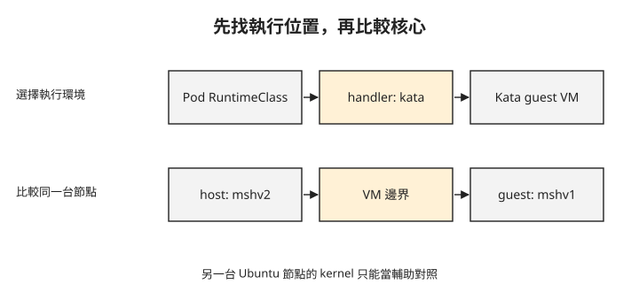

Day 6：確認 Kata Pod 使用的是哪個核心¶

一個 Pod 已經 Running，進去查看行程時也看不到宿主機程序。這能證明它使用 Kata 的 VM 隔離嗎？一般容器的 PID namespace 也會有類似結果。這章會沿著 RuntimeClass 找到節點 runtime，再對照 guest 與實際宿主機的核心，判斷工作負載是否使用預期的執行環境。
準備可執行 Kata 的節點¶
延續 Day 5 的威脅模型，本章處理的是不受信任工作負載影響宿主機的風險。一般容器共享宿主核心；Kata 在工作負載與宿主機之間加入 VM 邊界，降低不受信任程式利用共享核心影響宿主機的風險。AKS Pod Sandboxing 隔離機制
前面已學過 RuntimeClass → handler → containerd runtime → shim 的關係。這次使用的 RuntimeClass 是 kata-vm-isolation，handler 是 kata；它會透過 Kata 建立具有自身核心的輕量 VM。
本章採用 AKS Pod Sandboxing，節點池使用 Azure Linux 與支援巢狀虛擬化的第 2 代 VM。巢狀虛擬化讓本身已是 VM 的 AKS 節點，仍能建立 Kata 的 guest VM。可選用 Standard_D4s_v3 作為練習機型；若要換成其他 SKU（雲端機型代碼），也須符合上述條件，並依AKS 官方文件確認目標區域的可用機型與限制。
以下命令會新增一個計費節點池。<resource-group> 與 <cluster> 請使用現有練習叢集的資源群組與名稱；這裡沿用前幾章的自管 Cilium 網路。AKS Pod Sandboxing 只支援 Azure Linux，因此 --os-sku AzureLinux 與 --workload-runtime KataVmIsolation 都是這個配置的必要設定：
az aks nodepool add -g <resource-group> --cluster-name <cluster> \
--name katapool --mode User \
--os-sku AzureLinux --workload-runtime KataVmIsolation \
--node-vm-size Standard_D4s_v3 --node-count 1
節點建立後，先核對節點 Ready、Cilium 是否涵蓋新節點，以及節點公布的 runtime handler。以下是觀測結果；<kata-node> 指新 Kata 節點，最後一個 jsonpath 以省略號表示欄位摘要，不是可直接執行的完整查詢：
清單中的 kata-cc 是供機密容器使用的 handler，本章使用的是 kata。列出 kata-cc 不代表節點具備機密運算硬體，相關要求見進入 Day 7 前的硬體條件。
$ kubectl get nodes -o wide
aks-katapool-…-vmss000000 Ready … Microsoft Azure Linux 3.0 6.6.137.mshv2-1.azl3 containerd://2.2.4
aks-nodepool1-…-vmss000006 Ready … Ubuntu 24.04.4 LTS 6.8.0-1063-azure containerd://2.3.3-2
$ kubectl -n kube-system get ds cilium
desired=3 ready=3 ← Cilium DaemonSet 涵蓋了新的 Kata 節點
$ kubectl get node <kata-node> -o jsonpath='{…runtimeHandlers}'
kata kata-cc runc untrusted ← 注意這一行,連 kata-cc 都預先在了
Azure Linux 與 Ubuntu 節點在同一個叢集共存，各自有不同核心與 containerd 版本。Cilium desired 與 ready 都是 3，表示 DaemonSet 已涵蓋新節點，但應用的網路是否通仍要另外測試。
把 Pod 核心與它所在的宿主機比較¶
接下來的檢查以 kata-lab 裡兩個已部署的測試 Pod 為前提：isolated-pod 指定 runtimeClassName: kata-vm-isolation，排在 Kata 節點；normal-pod 不指定 Kata，排在一般 Ubuntu 節點。兩者都需要包含 uname 與網路測試工具的映像。部署方式可依官方 Pod Sandboxing 範例，並先確認各 Pod 實際排程到哪個節點。
下圖將已學過的 runtime 選擇接到 Kata VM。要驗證核心，須把圖中最右側的 guest 與承載它的 Kata 節點比較。

讀取兩個 Pod 的核心版本，得到以下結果：
$ kubectl -n kata-lab exec isolated-pod -- uname -r
6.6.137.mshv1-1.azl3 ← Microsoft Hypervisor 的 guest kernel
$ kubectl -n kata-lab exec normal-pod -- uname -r
6.8.0-1063-azure ← Ubuntu 主機 kernel
一般 Pod 的 6.8.0-1063-azure 與 Ubuntu 節點一致。更重要的是：Kata Pod 為 6.6.137.mshv1-1.azl3，它實際所在的 Azure Linux 宿主機則是前一段輸出的 6.6.137.mshv2-1.azl3。同一個 Kata 節點上的 guest 與 host 核心不同，配合 runtime 與排程資訊，支持它使用獨立核心的判斷。
只比較位於不同 OS 節點的兩個 Pod，證據會不足：兩個一般容器若分別排在不同核心的節點，也可能得到不同的 uname。同樣地，行程數很少也不能區分 Kata 與一般容器。
這是執行環境的檢查，尚未提供機密 VM 的遠端證明，也沒有測試宿主機無法讀取 guest 私有記憶體。
再確認跨節點、DNS 與 Service 路徑¶
獨立核心的 Pod 仍要與叢集其他服務通訊。以下結果分別檢查跨節點 ICMP、DNS 解析，以及 Kubernetes Service 的 HTTPS 回應：
# kata pod (10.0.2.202) → normal-pod (10.0.1.103),跨節點跨池
2 packets transmitted, 2 received, 0% packet loss, rtt avg 3.016 ms
# DNS
$ nslookup kubernetes.default.svc.cluster.local → 10.0.0.1
# Service(API server)
$ curl -sk https://kubernetes.default/healthz → http_code=401
Ping 兩次成功，表示選定的跨節點路徑可達；DNS 回覆 Service IP，表示名稱解析可用。最後的 401 是 API server 的未授權回應，支持「請求抵達服務」的判斷，並不代表應用取得了存取權限。
其中 curl 使用 -k，略過憑證驗證；因此不能把這筆測試當成伺服器憑證已被正確驗證。這組結果也只涵蓋選定流量，不代表所有 Cilium 政策或 Kata 網路功能都已測完。
回到節點確認 handler 的設定¶
最後要確認 kata handler 如何對應到 runtime。下列節錄是在 Kata 節點上的檢查 Pod 讀取宿主機設定；/host 是該檢查 Pod 掛載的宿主檔案系統。一般應用 Pod 不會自動擁有這個掛載或權限。
節錄也包含供 Day 7 對照的 kata-cc 設定。其中 snapshotter 指定管理容器檔案系統快照的元件，tardev 是此設定選用的元件名稱；本章只需確認 kata 的對應關係。containerd snapshotter 說明
$ grep -nE "kata|runtime_type" /host/etc/containerd/config.toml
[plugins."io.containerd.grpc.v1.cri".containerd.runtimes.kata]
runtime_type = "io.containerd.kata.v2"
[.kata.options] ConfigPath = "/usr/share/defaults/kata-containers/configuration.toml"
[plugins."io.containerd.grpc.v1.cri".containerd.runtimes.kata-cc]
snapshotter = "tardev"
runtime_type = "io.containerd.kata-cc.v2"
[.kata-cc.options] ConfigPath = "…/configuration-clh-snp.toml"
先找 runtimes.kata，再讀 runtime_type = "io.containerd.kata.v2"。ConfigPath 指定 Kata 使用的配置檔。這份輸出是縮寫節錄，包含省略路徑與簡寫 options 標題，不能複製回節點當成完整 TOML。
runtimes.kata-cc 則使用另一個 runtime type、snapshotter 與配置檔。這只代表映像準備了設定；是否能執行仍取決於節點硬體與完整配置。
進入 Day 7 前的硬體條件¶
本章只要求執行 kata-vm-isolation，不需要機密運算硬體。進入 Day 7 執行 kata-cc 前，須依該章的節點要求準備硬體，並檢查 RuntimeClass 與平台設定。Standard_D4s_v3 不具備下一章需要的機密容器硬體條件；即使 handler 清單與配置檔已有 kata-cc，仍不能取代硬體驗證。
想一想¶
- 兩個一般容器分別排在不同版本核心的節點，
uname不同，可以據此宣稱用了 Kata 嗎？應補哪個對照？ runtimeHandlers已有kata-cc，為什麼還不能執行機密容器？- API server 回 401，這筆測試證明了什麼？它是否證明身分與憑證都驗證成功？
小結¶
驗證 Kata 時，要把排程位置、RuntimeClass、節點 handler 與實際宿主核心連起來，再確認應用網路路徑。這章的證據支持獨立 guest 核心與選定網路路徑可用；它沒有提供記憶體機密性的保證。Day 7 會改用符合條件的機密運算節點與 kata-cc，進一步檢查機密執行路徑的平台設定。
延伸閱讀¶
想再深入，可以從這幾份開始：
- AKS Pod Sandboxing：節點與 Pod 的部署前提。
- Kata Containers：VM 隔離的架構。
- Sprint 3 Day 1：RuntimeClass 與節點 runtime 的關係。
Kubernetes 標誌為 CNCF（Linux Foundation）官方資產，此處作社群教學用途。